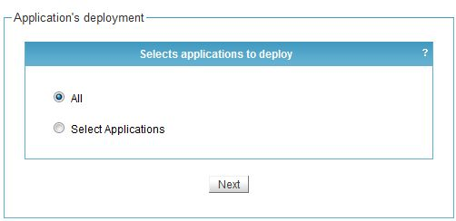
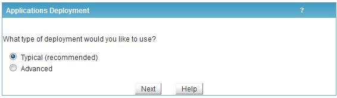
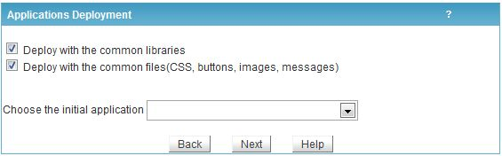
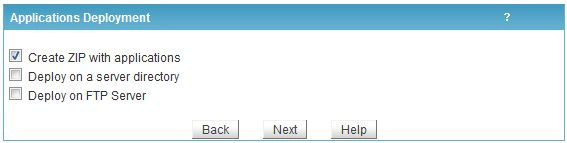
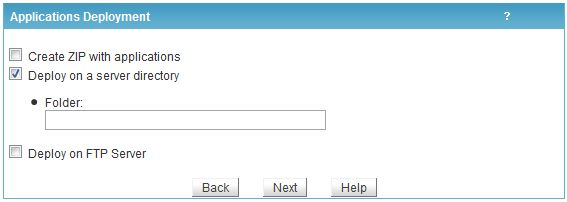
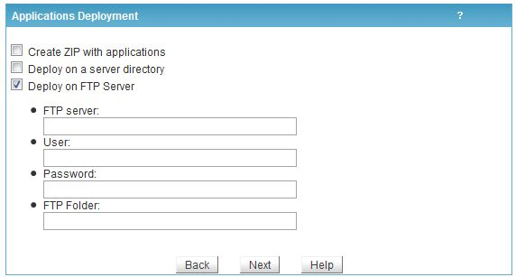
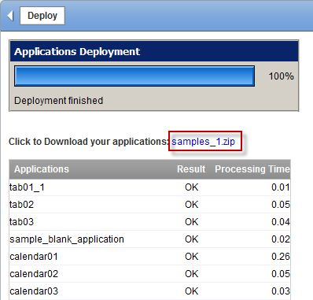

The user friendly typical deployment process generates a package with selected applications and libraries enabling instant project availability with minimum effort.
Step 1: Select ScriptCase menu item Project Deploy, as in the image below.
Step 2: Select the applications to deploy. It is possible to deploy all the Project or select an application set.

Step 3: Select Typical deployment.

Step 4: Include the common libraries required by the applications in the production environment in the deployment package. Define Project initial application.
Note: In case of re-deployment (deploying again same project applications) it is not necessary to select Deploy with common library unless when the common libraries are updated in another ScriptCase release.

Step 5: Choose Deployment Output. ScriptCase offers the following options:
1 - Create ZIP with applications (recommended): Upon complete the process is displayed a download link to the deployment package.

2 - Deploy on a Server directory: Deploy the applications in selected directory. Enter the directory specification as in image bellow. This option should only be used case the deployment is in the same ScriptCase server.

3 – Deploy on FTP server: Deploy the applications automatically in FTP remote server. Enter remote server required information as in image bellow.

Step 6: Upon complete the process is displayed an application deployed report.

Once the applications are deployed is necessary to configure the production environment before using the system for the first time. Click here for more info.